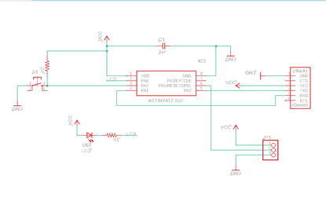
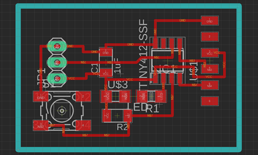
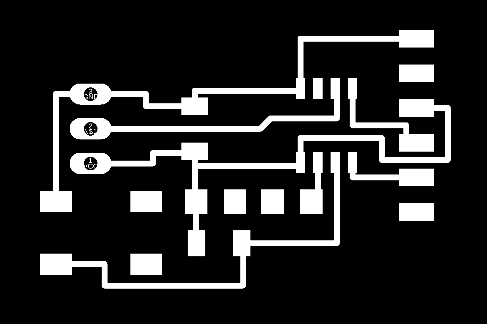
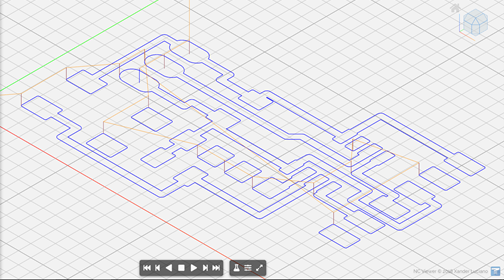
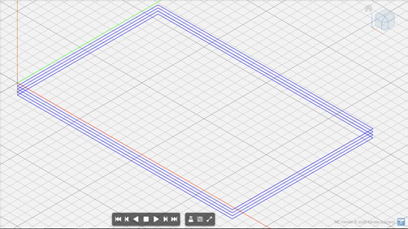
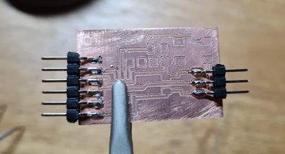
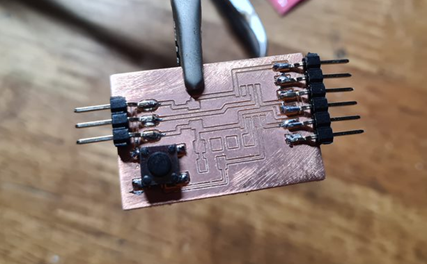
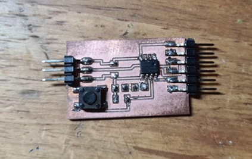
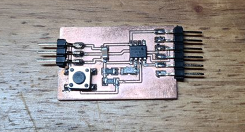

Electronics Design:
Autodesk EAGLE (PCB)
This was my first time using Autodesk Eagle and I have to admit that it was quite challenging and confusing. It took me more time than I wanted to get somewhat a hang of it.
Some of the things that I have learnt from using it is that the microprocesser is a very important component. Some people call it the brains of the board. Without it, the board is basically useless. I also found it interesting that there were so many different ways to orientate the different components to suit your prefered shape ans style.
To start designing however, we must remember to add the fab library to the autodesk Eagle library. This is because most if not all the important components that are going to be used can be found inside this specific library.
Individual Assignment
We were tasked to recreate a hello board based on the examples shown. The board had to have at least a button and an LED with current emitting resistor. We also had to check the design rules, ERC and DRC before making and testing it.The finished circuit board design:
 
PNGs of Hello Board :

Stepcraft CNC:
Similar to electronics production, I uploaded the gcode that I generated from mods before cablibrating the appropiate settings. This time however, I used ncviewer.com to check if the coding was right. I felt like this was a good practice, especially to check if the number of cuts were enough.  
The milling process was abit longer than usual due to the complexity of the cicuit design. This created quite a bit of dust which had to be vacuumed once in a while.
Soldering:
I started off by soldering the pins to the board. I felt that they were the easiest to do so why not start with them. 
Next I soldered the button switch. This is where the problems started for me. I will admit that it was pretty hard to solder the button due to its pins being slightly bigger than the intended board design. 
Nonetheless, it was not as hard as the microprocesser. The pins being super small was mainly why I was struggling. It took a few tries but I managed to do it after trying multiple times. I also went on to "bolb" some solder material on the remaining connection points. This was something that I learnt from my dad. Its probably not the best way but it worked for me. 
Here is the finished Hello Board. This is after soldering the final components, the resistors and the LED. Unfortunately this was where I noticed my problem, I had forgotten to add a connection from one of my resistors to the LED. Due to the time constrain, I borrowed Mr Stevens board to complete the coding part of this assignment. 